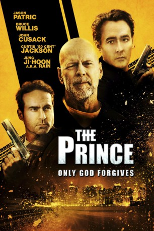
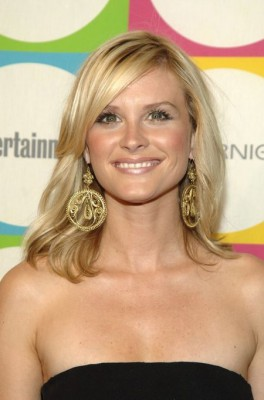

#2908 The Prince - Only God Forgives
Alternativ: The Prince
 
 IMDB-Wertung: 4.6 / 10
IMDB-Wertung: 4.6 / 10  Metascore: 19
Metascore: 19 
"The Prince" nannte man Paul einst, als er noch Auftragskiller bei der Mafia war. Doch dies ist lange her. Seit seinem als Ticket in die Freiheit geplanten, jedoch gescheiterten Bombenattentat auf seinen früheren Arbeitgeber, Mafiaboss Omar, bei dem nicht der Mafioso, sondern dessen Lebensgefährtin ums Leben kam, lebt Paul in der Versenkung. Zwanzig Jahre nach dem tragischen Mord an seiner Frau sieht Omar den Zeitpunkt für seine Rache gekommen: Um den ehemaligen Mitstreiter aus der Reserve zu locken, entführt der Gangster Pauls Tochter Beth. Doch der ehemalige Killer ist über die Jahre keineswegs eingerostet und hat immer noch Kontakte in die Unterwelt, die ihm wohlgesonnen sind, wie sein früherer Kumpel Sam, der ihn mit der für die Rettungsaktion notwendigen Feuerkraft ausrüstet. Schließlich kommt es zum alles entscheidenden Showdown zwischen dem Gangsterboss alter Schule und "The Prince".
Jahr: 2014
Dauer: 90 Minuten
FSK: 16
Land: USA Studio: LionsgateTonspuren: DTS - ,
Untertitel: Deutsch,
Auflösung: 1080p (1920x800) Größe: 7434 MB
Genre: Action, Thriller
Regisseur: Brian A. Miller
Drehbuch: Andre Fabrizio, Jeremy Passmore
Soundtrack: The Newton Brothers
Darsteller:
 Jason Patric als Paul
Jason Patric als Paul- Jessica Lowndes als Angela
 Gia Mantegna als Beth
Gia Mantegna als Beth Bruce Willis als Omar
Bruce Willis als Omar- Rain als Mark
 John Cusack als Sam
John Cusack als Sam 50 Cent als The Pharmacy
50 Cent als The Pharmacy Don Harvey als Riley
Don Harvey als Riley Jesse Pruett als Wilson
Jesse Pruett als Wilson-  Bonnie Somerville als Susan
- Tim Fields als Jimmy
 Johnathon Schaech als Frank
Johnathon Schaech als Frank- Andrea Burns als Janine
- Jim Bennett als Justin
 Tyler Jon Olson als Eddie
Tyler Jon Olson als Eddie- Jonathan Carkeek als Mitch
- Tara Holt als Candice
- David Gordon als Omar's Head of Security
- Courtney B Turk als Meagan
 Patrick Constantine Bertagnolli Jr. als Casino Patron , uncredited
Patrick Constantine Bertagnolli Jr. als Casino Patron , uncredited- Victoria Blackmon als Extra , uncredited
 Bennett Wayne Dean Sr. als Vagrant , uncredited
Bennett Wayne Dean Sr. als Vagrant , uncredited- Don Lee als Steve , uncredited
- Natalie Light als Sara , uncredited
- Ginger McNamara als Hotel Guest , uncredited
 Jaylen Moore als Raffi , uncredited
Jaylen Moore als Raffi , uncredited- Brent Nevison als Bodyguard , uncredited
- Ho-Sung Pak als Hotel Clerk , uncredited
- Ryan Sanson als Big Mike's Son , uncredited
 Didi Costine als Rachel
Didi Costine als Rachel- Jay Oringer als Brickyard Bouncer
- Andrew Wert als Facetime Stranger
- Danielle Phelan als Junky Girlfriend
- Martin Blencowe als Bartender
- Taylor Ann Trad als Girl #1
- Billy Culbertson als Bouncer , uncredited
- Doris Dean als Driver , uncredited
- Michelle Jones als Paul's Wife , uncredited
- Ashley Sanson als Sam's Wife , uncredited
- Ryley Sanson als Sam's Daughter , uncredited
- Jennifer Williams als Girl #2 , uncredited
Datei: X:\2014(N-Z)\Prince - Only God Forgives, The (2014, FSK16, 1920x800).mkv seit 30.12.2015
Festplatte: HD 2013(I-Z)-2014(A-Z)
 Es gibt insgesamt 163 Filme in der Gruppe '2014(N-Z)'
Es gibt insgesamt 163 Filme in der Gruppe '2014(N-Z)'